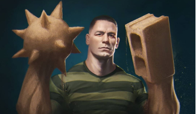

Dennis Carredine
Identité : Inspiré du Cambrioleur
Capacités : Humain sans caractéristique particulière.
Objéctif : Mi-temps entre escroc et voleur de voiture à New-York, il est en partie responsable,
avec Flint Marco, de la mort de Ben Parker lors d'un braquage à main armé qui a mal tourné.
C'est le premier adversaire de Ben Parker qui l'amènera à devenir Spiderman.

Bouffon Vert
Identité : Norman Osborn
Capacités : Fondateur de Oscrop Technologies, Serum Super Soldat,
Planeur/Equipement de hautes technologies.
Objéctif : Souffrant d'une dissociation de personnalité après l'injection du serum,
il ne cherche que le chaos et la mort de Spidermann. La personnalité de Norman
reste présente, mais dominée par le bouffon.

Dr. Octopus
Identité : Otto Octavius
Capacités : Chercheur à Oscrop Technologies, Tentacules mécaniques contrôlés par puce neuronale.
Objéctif : Suite à un accident lors d'une expérience, sa femme meurt et son équipement
prend le contrôle de son esprit le rendant plus violent. Pensant que Spiderman en est
l'origine, il souhaite le voir mort.

Homme-sable
Identité : Flint Marco
Capacités : Change son corp en sable, Contrôle individuellement les molécules de sables.
Objectif : Sauver sa fille atteint de maladie grave et son unique préoccupation, même après son
accident l'ayant changé en homme-sable. Par manque d'argent, il devient criminel malgrès lui et
enchaine les mauvaises décisions.

Bouffon Vert II
Identité : Harry Osborn
Capacités : Dirigeant de Oscorp Technologies, Serum Super Soldat II, Planneur/Equipements de hautes technologies
Objéctif : Meilleur ami de Peter Souffrant d'une dissociation de personnalité après l'injection du serum
(comme son père), il ne cherche que la mort de Spiderman, tenu responsable de la mort de son père.

Venom
Identité : Symbiote | Eddie Brock
Capacités : Force surhumaine, Matérialiser des armes/objets, Résistance importante
Objectif : Extraterrestre se liant à un journaliste d'investigation, il est l'anti Héro par excellence.
A la fois térrifiant et violent, mais animé par le sentiment de justice d'Eddie, mieux vaut ne pas en faire son ennemi.

Lézard
Identité : Dr. Curtis Connors
Capacités : Chercheur Oscorp Technologies, Force surhumaine et Aptitudes reptiliennes.
Objectif : Animé par le désir de sauvé les maux du corp humain, il développe un serum à partir
d'ADN de lézard. Ce premier essai devait faire repousser son bras amputé, mais il se transforme
entièrement en lézard. Son souhait, étendre cette évolution.

Electro
Identité : Maxwell Dillon
Capacités : Ingénieur Oscorp Technologies, Manipulation et stockage de l'éléctricité
Objectif : Une expérience à Oscorp tourne mal et transforme son corp en condensateur capable de manipuler
l'éléctricité. Fan obsessionnel de Spiderman, son pouvoir le change en adversaire rempli de colère et cherchant
de son idole

Rhino
Identité : Aleksei Sytsevich
Capacités : Costume mécanique en forme de Rhinocéros puissant.
Objectif : Mafieux russe qui a détourné un camion blindé d'Oscorp contenant des fioles de plutonium,
mais désarmé et vaincu par Spiderman. Il est ensuite recruté par Harry Osborn, premier membre d'une
nouvelle équipe créée pour combattre Spider-Man et faire des ravages.

Vautour
Identité : Adrian Toomes
Capacités : Costume mécanique de vautour, armes extraterrestre.
Objectif : Il se convertit en marchand d'armes extraterrestre suite à la faillite de son entreprise. Père de famille fortuné
le jour, voleur d'armes extraterrestre la nuit, il mène une double vie. Spiderman se mettant en travers de son business, il
souhaite la mort du justicier.

Mysterio
Identité : Quentin Beck
Capacités : Intelligent, Costume hautes technologies, Drones
Objectif : Ancien employé de Stark Industries il charche à remplacer Iron Man et devenir
un symbole de la justice. Pour cela, il orchestre des attaques en utilisant des illusions et une
technologie avancé. Spiderman découvrant son plan, il devient un adversaire à la hauteur du héro.